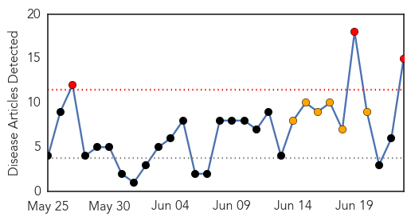
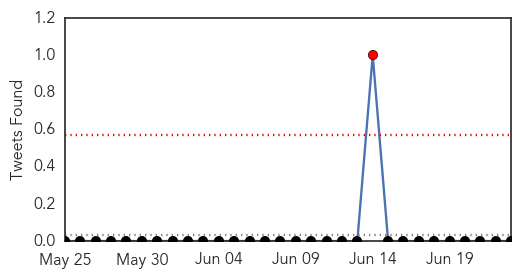
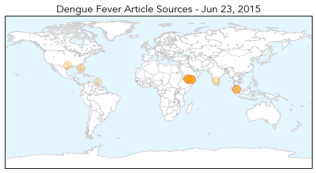
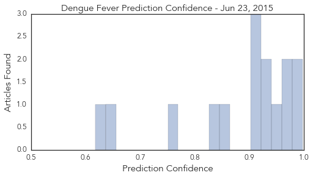
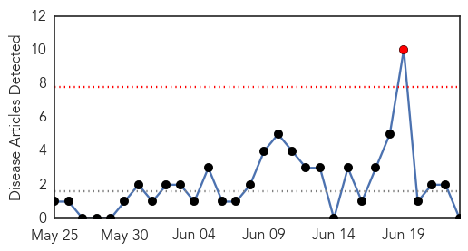
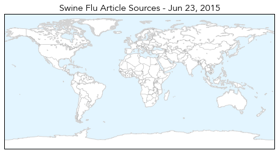
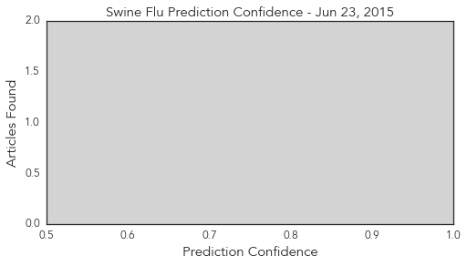

Dengue Fever
30-Day Web Trend
3 alerts, 6 warnings

30-Day Twitter Trend
1 alerts, 0 warnings

Article Locations
Article Confidences
Top Articles:
- 0.997
- Yemen's health situation 'disastrous', officials say
- 0.984
- Int'l aid delivered to Yemen to cope with health crisis
- 0.973
- WHO: 3,000 cases of dengue fever in Yemen reported since March
- 0.965
- Dengue cases with more complicated symptoms this year, says Health Ministry
- 0.957
- Hard Times: 'Yemen has over 3,000 Dengue cases, figure expected to get higher'
- 0.924
- Orange County officials to talk mosquito safety, prevention
- 0.922
- Farsnews
- 0.919
- More than 3,000 dengue cases in Yemen since March: WHO
- 0.904
- WHO concerned about rise in dengue cases in Yemen
- 0.903
- Health Ministry: Malaysia prepared to face MERS, but Dengue threat remains - Nation
- 0.855
- Experts Warn Of Mosquito Infestation This Summer
- 0.833
- The dreaded Dengue returns and you can’t count on platelets
- 0.764
- 39 killed in south Yemen clashes
- 0.654
- MOH intensifies Fogging Campaign against Mosquito-Borne Virus
- 0.618
- Country faces largest dengue epidemic ever
Top Tweets:
-
No tweets found for Jun 23, 2015
Swine Flu
30-Day Web Trend
1 alerts, 0 warnings

30-Day Twitter Trend
2 alerts, 0 warnings

Article Locations
Article Confidences
Top Articles:
-
No articles found for Jun 23, 2015
Top Tweets:
-
No tweets found for Jun 23, 2015